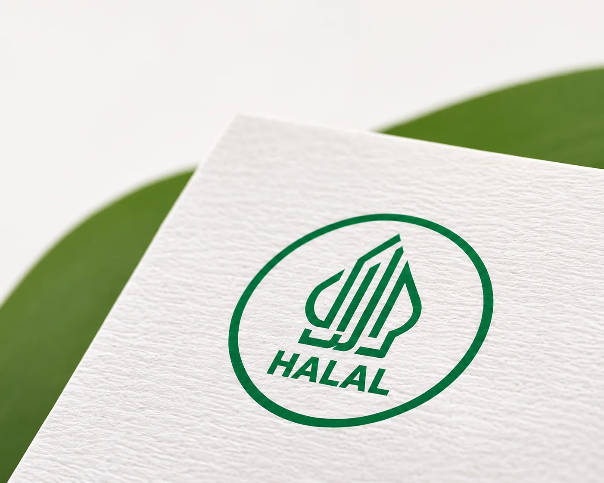
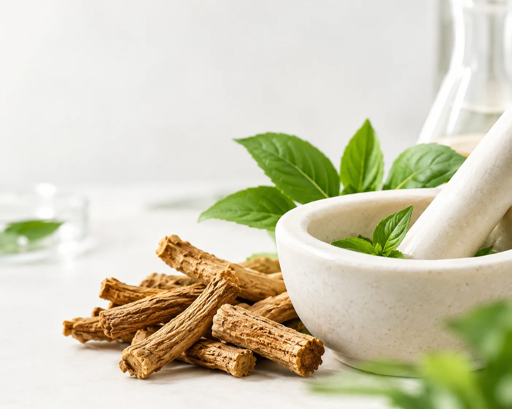

BPOM
Badan Pengawas Obat dan Makanan
Registrasi Nomor Izin Edar (NIE) dan pengawasan produk suplemen, obat tradisional, pangan olahan, serta kosmetik.
Kualitas, keamanan, dan kepatuhan menjadi bagian dari tanggung jawab kami pada setiap tahap kegiatan usaha.
PT High-Desert Indonesia Foto bersifat ilustratif.
01 / Komitmen Kualitas
Pengawasan kualitas serta pemenuhan persyaratan produk sesuai kategori dan lingkup kegiatan perusahaan.
Kualitas • Keamanan • Kepatuhan
Kepatuhan regulasi.
Koordinasi yang tertib.
03 / Pengawasan
100%
Produk lulus uji laboratorium mutu
Pengawasan yang bertanggung jawab untuk pemenuhan persyaratan regulasi produk.
Setiap kategori produk memiliki ketentuan yang berbeda. Kami berkoordinasi dengan instansi terkait sesuai kebutuhan dan lingkup kegiatan usaha.
Instansi terkait
Registrasi Nomor Izin Edar (NIE) dan pengawasan produk suplemen, obat tradisional, pangan olahan, serta kosmetik.

BPJPHKoordinasi jaminan produk halal sesuai ketentuan untuk kategori produk yang diwajibkan.
Pemenuhan ketentuan di bidang kesehatan yang relevan dengan kegiatan distribusi dan importasi.
Kepatuhan kepabeanan atas kegiatan importasi, termasuk kelengkapan Pemberitahuan Impor Barang (PIB).
Catatan Koordinasi regulasi sesuai lingkup usaha • bukan pernyataan sertifikasi seluruh produk.
03 / Alur Pengawasan
Tahapan pengawasan yang dijalankan sesuai kategori dan lingkup kegiatan usaha.
Penilaian mitra dan asal produk sebelum kerja sama dimulai.
Pemeriksaan spesifikasi, sertifikat analisis, dan kelengkapan dokumen produk.
Koordinasi dengan instansi terkait sesuai kategori produk.
Pemeriksaan barang masuk dan penyimpanan sesuai karakter produk.
Penyaluran dalam jaringan usaha disertai pencatatan dan tindak lanjut keluhan.
Standar Acuan
Penerapan standar disesuaikan dengan kategori produk dan lingkup kegiatan, untuk memastikan mutu, keamanan, dan kepatuhan yang konsisten.
Cara Distribusi Obat yang Baik

Cara Pembuatan Obat Tradisional yang Baik

Sistem manajemen mutu
Jaminan produk halal BPJPH
04 / Verifikasi & Keterbukaan
Informasi berikut membantu Anda memahami cara kami menjaga kepatuhan dan cara memverifikasi status produk.
Koordinasi regulasi dilakukan sesuai lingkup usaha dan kategori produk. Status perizinan dan sertifikasi berlaku per produk, sehingga informasi untuk produk tertentu dapat dikonfirmasi melalui kontak resmi perusahaan.
Nomor izin edar dapat diperiksa langsung melalui layanan Cek Produk BPOM di cekbpom.pom.go.id dengan memasukkan nomor registrasi atau nama produk.
Status sertifikat halal dapat dicek melalui situs resmi BPJPH di halal.go.id.
Keluhan dapat disampaikan melalui kontak resmi perusahaan atau Whistleblowing System. Setiap laporan akan dicatat dan ditindaklanjuti sesuai prosedur internal.
Kegiatan utama PT High-Desert Indonesia meliputi importasi, distribusi wholesale, serta pengembangan produk dan penelitian. Rincian kegiatan dapat dilihat di halaman Business Activities.